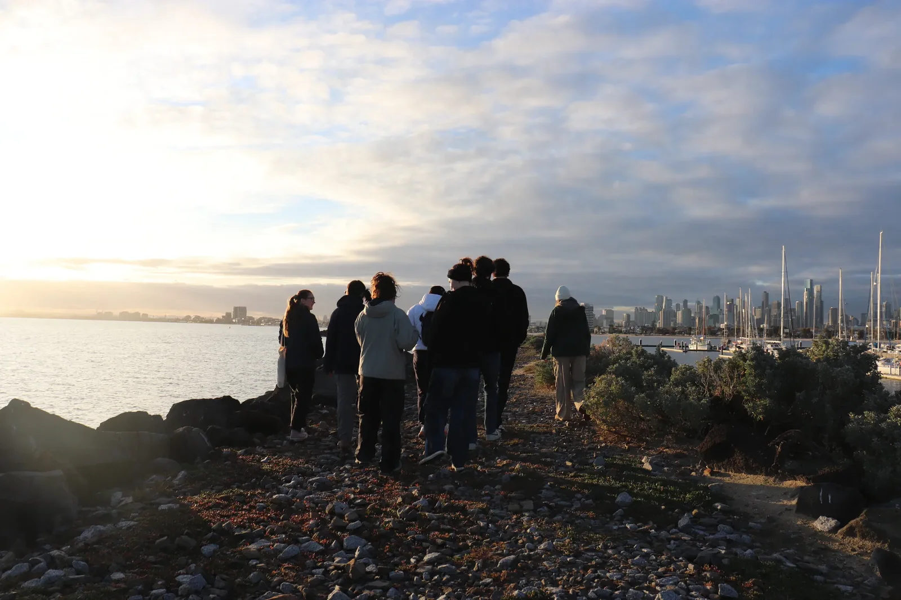
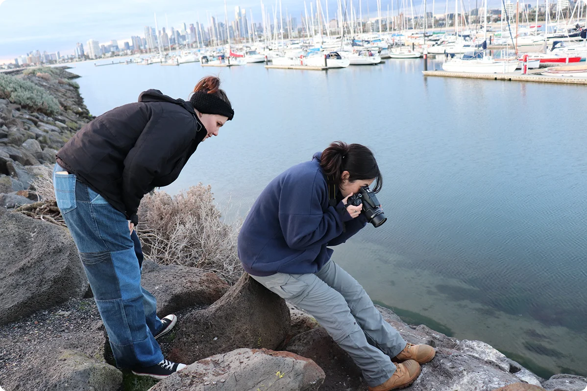
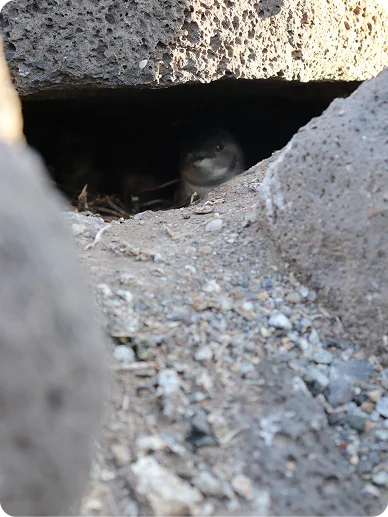
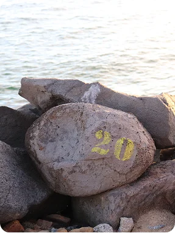

The St Kilda Penguin Project

The Penguins
Nestled along Melbourne’s coastline is a rare and iconic
colony of
Eudyptula
minor, better known as fairy penguins. Despite their popularity,
monitoring
this urban-dwelling population in St Kilda presents serious challenges.
Traditional methods like manual counts and trail cameras fall short: the rocky
environment
makes
it difficult to access nesting areas, and standard cameras are too bulky to be
placed at the narrow entrances of penguin burrows.
These limitations mean we
currently lack accurate, consistent data on colony size
and
health.
Our involvement

The Challenge
Penguin vocalisations are too subtle for the human ear to reliably distinguish.

Our Solution
We're building an AI-powered acoustic monitoring device that learns to identify individual calls.

Goal
Our goal is to use this system to help estimate populations and monitor penguin colony health non-invasively.
Future Planning
Beyond St Kilda, we hope this technology can be adapted to support other conservationists globally by offering a new way to monitor elusive or vulnerable species through sound.